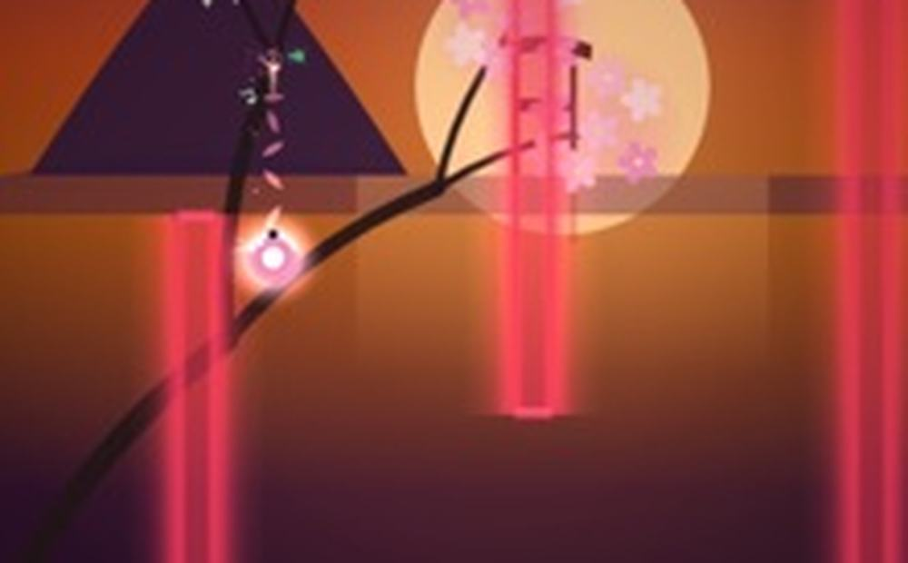
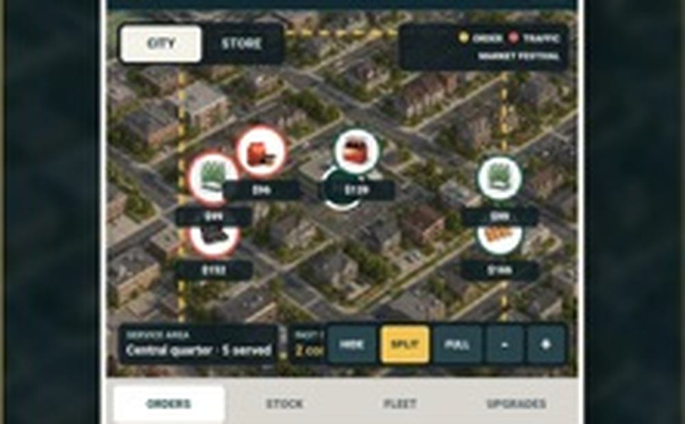
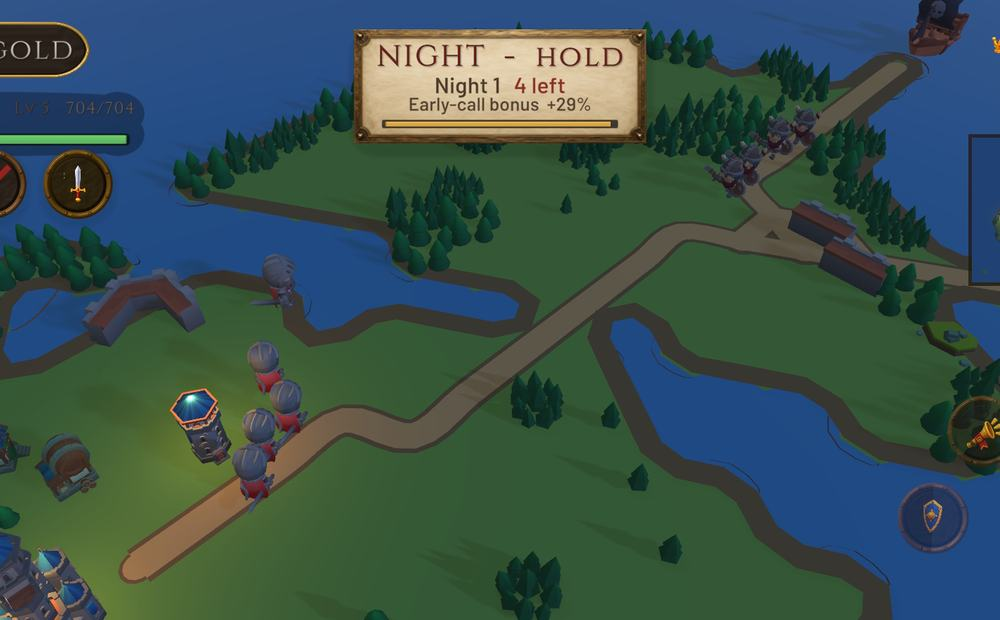
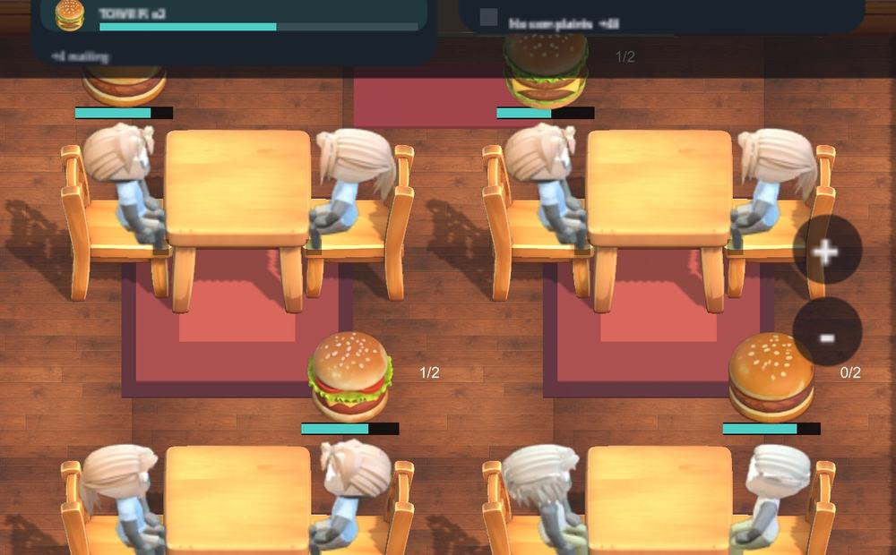
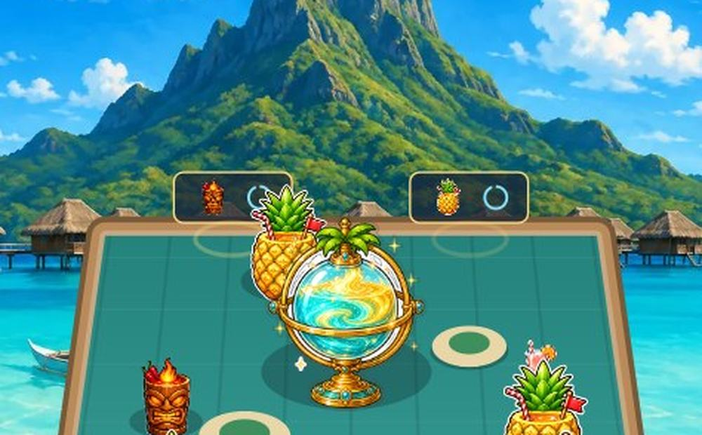

LIVE · iOS

LUMEN
flip · thread · flowOne tap flips gravity. Thread the neon gates, chain the motes, and tip into slow motion when the chain gets long enough.
- 13 MODES
- 23 WORLDS
- 12.7 MB
- NO WIFI NEEDED
- FREE

Small games for one thumb, made by one person.

One tap flips gravity. Thread the neon gates, chain the motes, and tip into slow motion when the chain gets long enough.

Run the shop and the van. Every order you accept, you have to deliver yourself — so the route is the real puzzle.

A hex realm you build between waves. When the sun goes down, whatever you put on the map is what you have to hold with.

Lay out the kitchen, then survive the service you designed. Every shift is faster than the last one.

Slingshot cocktails up a beach table. Matching drinks merge into the next one up the chain, across twelve island bars.